On considère le jeu de données tomato_sauce.csv disponible ici .
Les données recueillies portent sur des mesures effectuées sur un site de production de sauce à base de tomate.
La variable \(Y\) à expliquer, notée rdt, est une réponse liée au rendement de production (% d’extrait de tomate dans la sauce).
La variable explicative \(X\), notée ratioMP, est relative à la qualité du lot de matières premières (% de solides insolubles dans l’eau par rapport à la quantité de solide totale).
24 observations ont été réalisées sur une série d’ordres de production consécutifs
Importer les données dans R, et en dresser un rapide résumé statistique.
ratioMP rdt
Min. :10.71 Min. :30.20
1st Qu.:12.67 1st Qu.:35.88
Median :13.70 Median :39.10
Mean :13.78 Mean :39.73
3rd Qu.:14.82 3rd Qu.:43.38
Max. :18.22 Max. :51.00
Réaliser les boxplots et histogrammes des différentes variables. Commenter.
Voir le code
library(ggplot2)# Boxplotsggplot(tomato_sauce) +aes(x="",y=ratioMP)+geom_boxplot(width=0.1)+theme_minimal()+labs(title="Distribution de la variable ratioMP",x="")
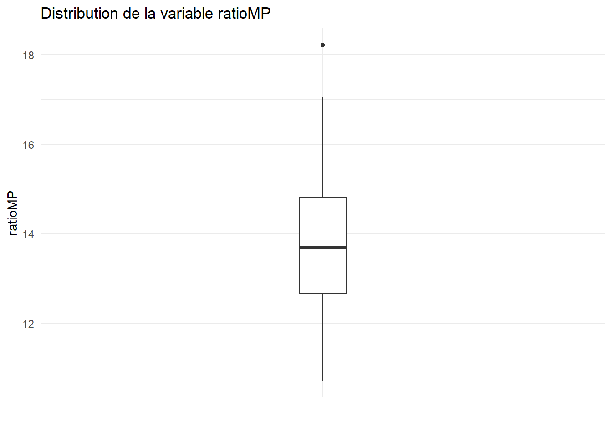
# On remarque une valeur anormalement grandeggplot(tomato_sauce) +aes(x="",y=rdt)+geom_boxplot(width=0.1)+theme_minimal()+labs(title="Distribution de la variable rdt",x="")
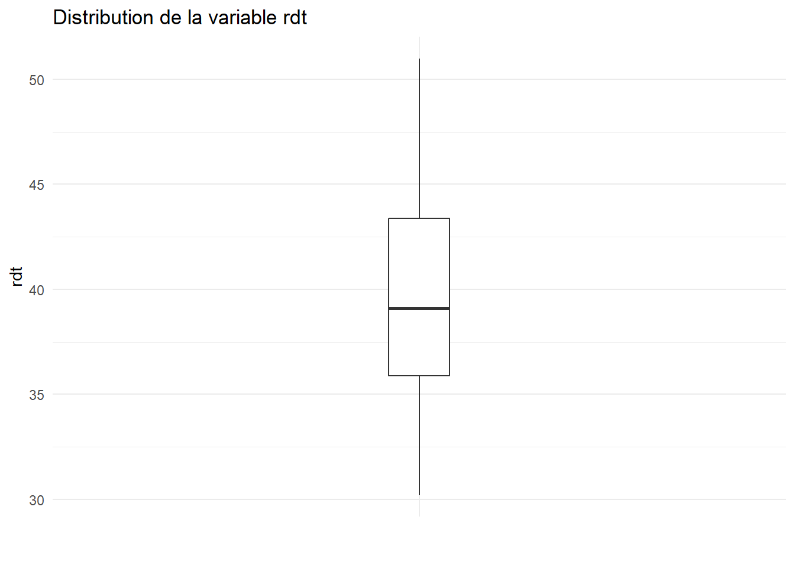
# Rien à signaler# Histogrammesn <-nrow(tomato_sauce) # nombre d'observationsn_class <-ceiling(1+3.3*log10(n)) #nombre de classes (Formule de Sturges)ggplot(tomato_sauce)+aes(x=ratioMP)+geom_histogram(fill="skyblue",color="grey40",bins=n_class)+theme_minimal()+labs(title="Distribution de la variable ratioMP",y="Effectifs")
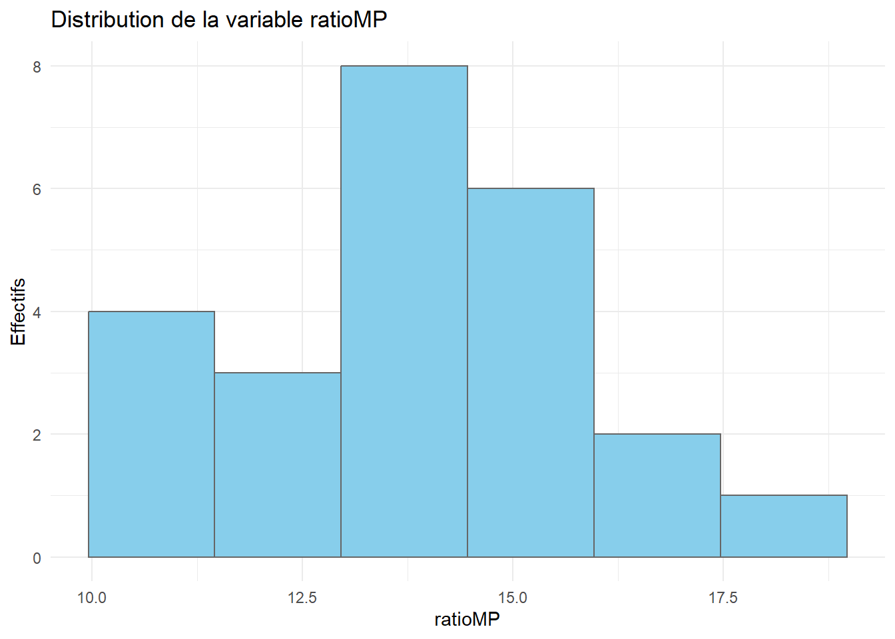
# Il y a un cerrtain nombre de valeurs très basses, les autres étant globalement regroupées autour de la moyenneggplot(tomato_sauce)+aes(x=rdt)+geom_histogram(fill="skyblue",color="grey40",bins=n_class)+theme_minimal()+labs(title="Distribution de la variable rdt",y="Effectifs")
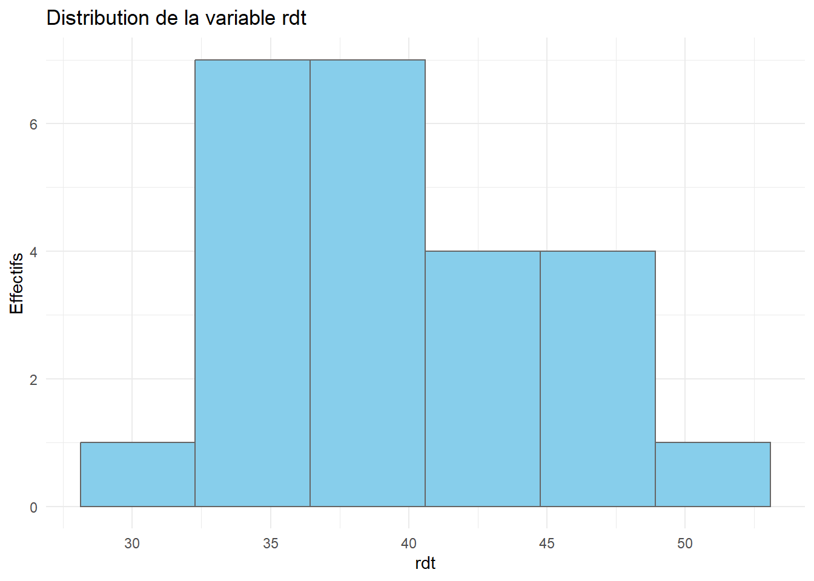
# Les données semblent regroupées en 2 paquets : un autour de 37, l'autre, plus petit, autour de 45
Tracer le nuage de points associé aux données, puis calculer le coefficient de corrélation linéaire entre les deux variables (rappeler la définition de ce dernier).
Commentaire
Pour deux séries d’observations \((x_i)_{1\leqslant i \leqslant n}\) et \((y_i)_{1\leqslant i \leqslant n}\), le coefficient de corrélation est donné par \[\rho = \dfrac{\sum_{i=1}^n (x_i -\overline{x})(y_i-\overline{y})}{\sqrt{\sum_{i=1}^n (x_i-\overline{x})^2}\times \sqrt{\sum_{i=1}^n (y_i-\overline{y})^2}}\]
Voir le code
ggplot(tomato_sauce) +aes(x=ratioMP,y=rdt)+geom_point(color="tomato")+theme_minimal()+labs(title="Nuage de points rdt VS ratioMP")
Pearson's product-moment correlation
data: tomato_sauce$ratioMP and tomato_sauce$rdt
t = -18.718, df = 22, p-value = 5.293e-15
alternative hypothesis: true correlation is not equal to 0
95 percent confidence interval:
-0.9871402 -0.9308572
sample estimates:
cor
-0.9700104
Celui-ci est-il significativement non nul ? Un modèle linéaire semble-t-il adapté aux données ? Ecrire mathématiquement ce modèle.
Réponse
Le test statistique réalisé nous renvoie une \(p\)-value inférieure à 0.05 (elle est égale à \(5.293\times 10^{-15}\)). On rejette donc l’hypothèse nulle comme quoi les deux séries sont non corrélées. En d’autres termes, le coefficient de corrélation est siginificativement non nul. Un modèle linéaire semble alors parfaitement adapté aux données (tendance linéaire sur le nuage de points + coefficient de corrélation significativement non nul). Celui-ci s’écrit \[ rdt_i = \beta_0 + \beta_1 ratioMP_i + \varepsilon_i, \quad 1 \leqslant i \leqslant n,\] où les \(\varepsilon_i\) sont i.i.d. de loi \(\mathcal{N}(0,\sigma^2)\).
À l’aide de la fonction lm(), ajsuter un modèle linéaire aux données. En faire un résumé rapide avec la fonction summary().
Call:
lm(formula = rdt ~ ., data = tomato_sauce)
Residuals:
Min 1Q Median 3Q Max
-1.5871 -0.9040 -0.1434 1.0381 3.1522
Coefficients:
Estimate Std. Error t value Pr(>|t|)
(Intercept) 76.1934 1.9657 38.76 < 2e-16 ***
ratioMP -2.6467 0.1414 -18.72 5.29e-15 ***
---
Signif. codes: 0 '***' 0.001 '**' 0.01 '*' 0.05 '.' 0.1 ' ' 1
Residual standard error: 1.288 on 22 degrees of freedom
Multiple R-squared: 0.9409, Adjusted R-squared: 0.9382
F-statistic: 350.4 on 1 and 22 DF, p-value: 5.293e-15
Donner les valeurs estimées des coefficients du modèle, ainsi qu’un intervalle de confiance à 95% de ces coefficients avec la fonction confint(). Ceux-ci sont-ils significativement non nuls ? Préciser la statistique de test utilisée ici.
Réponse
On a les estimations \[\hat{\beta}_0 \approx 76.1934 \quad \text{et} \quad \hat{\beta}_1 \approx -2.6467.\] Ceux-ci sont significativement non nuls (présence de 3 étoiles dans le résumé). La statistique de test utilisée ici est, pour \(i \in \{0,1\}\)\[t_i = \dfrac{\hat{\beta}_i}{\hat{\sigma}_i} \] qui suit la loi de Student \(\mathcal{T}_{n-2}\) sous l’hypothèse nulle \(H_0 : \beta_i=0\). Les intervalles de confiance des coefficients sont donnés par le code ci-dessous.
Voir le code
Quelle est la proportion de variance expliquée par le modèle ? Rappeler la définition de l’indicateur statistique utilisé.
Réponse
On utilise le coefficient de déterminations \(R^2\)\[ R^2 = \dfrac{SCE}{SCT} = \dfrac{\sum_{i=1}^n (\hat{y}_i-\overline{y})^2}{\sum_{i=1}^n (y_i-\overline{y})^2}\] où les \(\hat{y}_i = \hat{\beta}_0 + \hat{\beta}_1x_i\) sont les valeurs ajustées par le modèle. Ici, on a \(R^2 \approx 0.9409\), ce qui signifie que le modèle explique 94,09% de la variance. Il est donc extrêmement bien adapté aux données.
Utiliser la fonction geom_smooth() du package ggplot2 afin de tracer la droite de régression linéaire ajustée aux données.
L’intervalle de confiance à 95% tracé par cette fonction est celui de la valeur\(\hat{\beta}_0 + \hat{\beta}_1 x\). Il s’agit en fait de l’intervalle de confiance pour la valeur moyenne de la variable réponse \(y\).
Voir le code
ggplot(tomato_sauce) +aes(x=ratioMP,y=rdt)+geom_point(color="tomato")+geom_smooth(method="lm",color="tomato",linetype="dashed",lwd=0.5,fill="tomato",alpha=0.2)+theme_minimal()+labs(title ="rdt VS ratioMP")
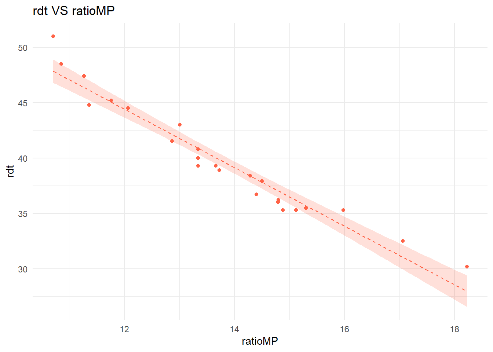
On souhaite à présent rajouter l’intervalle de confiance pour les prévisions faites par le modèle. Celui-ci est différent de l’intervalle tracé par la fonction geom_smooth(). Il prend notamment en compte la dispersion liée au bruit gaussien du modèle.
A l’aide de la fonction predict() récupérer les bornes inférieures et supérieures des prévisions associées aux observations du jeu de données. On stockera ces valeurs dans le data-frame initial avec pour noms de variables pred_lwr et pred_upr.
Rajouter, à l’aide de la fonction geom_line(), ces bornes sur le graphique réalisé jusqu’à présent.
Voir le code
library(tidyverse)pred <-predict(lm_sauce,newdata = tomato_sauce,interval="prediction")tomato_sauce <- tomato_sauce %>%mutate(pred_lwr = pred[,2],pred_upr = pred[,3])ggplot(tomato_sauce) +aes(x=ratioMP,y=rdt)+geom_point(color="tomato")+geom_smooth(method="lm",linetype="dashed",lwd=0.5,color="tomato",alpha=0.2,aes(fill="Intervalle de confiance pour la valeur moyenne (95%)"))+scale_fill_manual(values="tomato")+theme_minimal()+labs(title ="rdt VS ratioMP")+geom_line(aes(y=pred_lwr,linetype="Intervalle de confiance pour les prévisions (95%)"))+geom_line(aes(y=pred_upr,linetype="Intervalle de confiance pour les prévisions (95%)"))+scale_linetype_manual(values="dotted")+theme(legend.title =element_blank(),legend.position ="bottom")
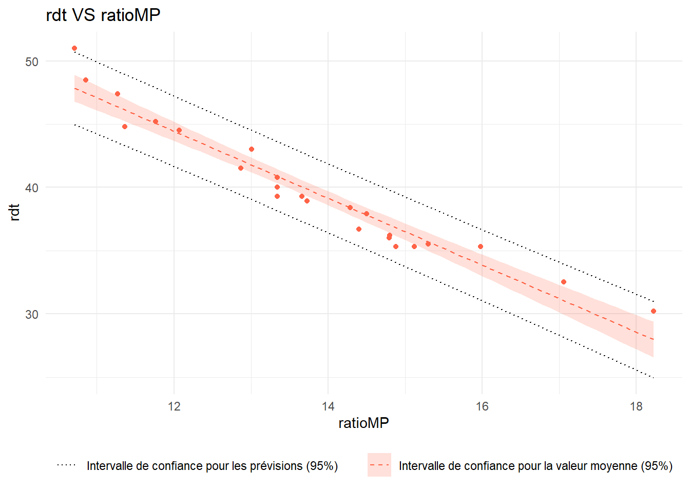
Exercice 2
On s’intéresse ici à l’équilibre des saveurs dans différents cidres.
90 cidres bruts ont été évalués par un jury sensoriel formé de 24 juges (échelle de notation de 1 à 10, calcul des notes moyennes), selon différents critères :
Saveur sucrée;
Saveur Acide;
Saveur amère;
Saveur astringente
On étudie plus précisément la relation entre la saveur astringente (variable réponse) des cidres et leur saveur amère (variable explicative).
Importer le jeu de données dans R (disponible ici ), et en dresser un rapide résumé statistique.
S.Sucree S.Acide S.Amere S.Astringente
Min. :3.444 Min. :2.107 Min. :2.143 Min. :0.7143
1st Qu.:4.580 1st Qu.:3.625 1st Qu.:3.286 1st Qu.:1.4732
Median :5.250 Median :4.089 Median :3.964 Median :2.0000
Mean :5.169 Mean :4.181 Mean :4.274 Mean :2.0561
3rd Qu.:5.670 3rd Qu.:4.643 3rd Qu.:5.268 3rd Qu.:2.4286
Max. :7.036 Max. :6.536 Max. :7.857 Max. :4.6786
NA's :4
sum(is.na(cidre))
[1] 4
# Attention, il y a 4 valeurs manquantes pour la saveur Astringente...
Représenter graphiquement la distribution des différentes variables du jeu de données par la méthode de votre choix.
Voir le code
# On se propose ici de faire des boxplotsggplot(cidre) +aes(x="",y=S.Sucree)+geom_boxplot(width=0.1)+theme_minimal()+labs(x="",y="Saveur sucrée",title ="Distribution des notes pour la saveur sucrée")
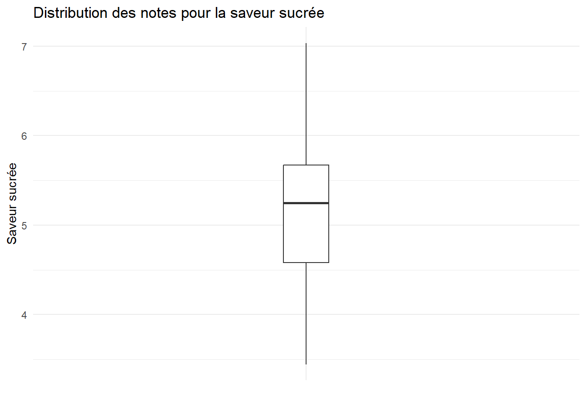
ggplot(cidre) +aes(x="",y=S.Acide)+geom_boxplot(width=0.1)+theme_minimal()+labs(x="",y="Saveur sucrée",title ="Distribution des notes pour la saveur acide")
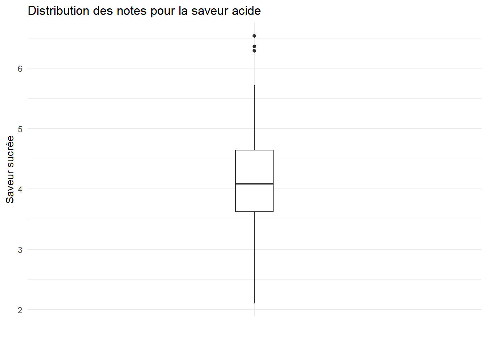
ggplot(cidre) +aes(x="",y=S.Amere)+geom_boxplot(width=0.1)+theme_minimal()+labs(x="",y="Saveur sucrée",title ="Distribution des notes pour la saveur amère")
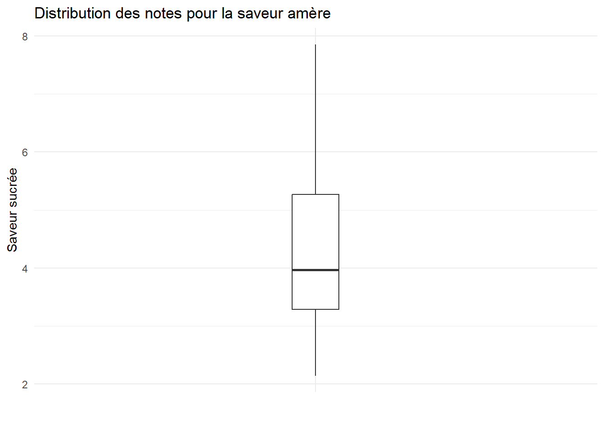
ggplot(cidre) +aes(x="",y=S.Astringente)+geom_boxplot(width=0.1)+theme_minimal()+labs(x="",y="Saveur sucrée",title ="Distribution des notes pour la saveur astringente")
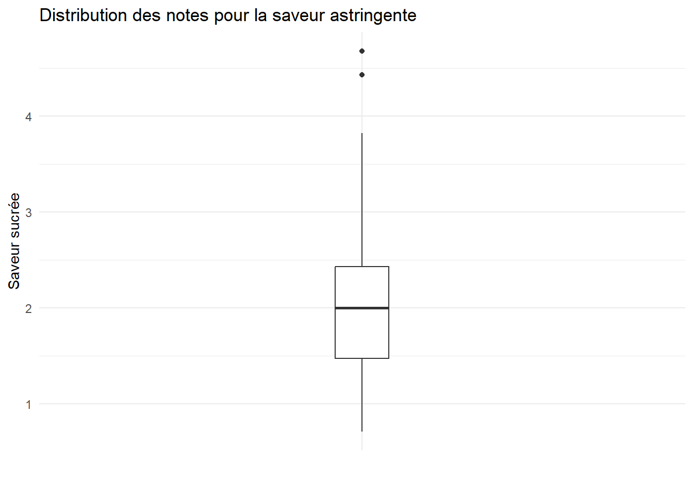
# On remarque quelques outliers pour les saveurs acide et astringente
Combien de données manquantes le jeu de données comporte-t-il ?
Réponse
Comme indiqué plus haut, il y en a quatre.
On souhaite imputer ces valeurs manquantes via un modèle linéaire simple reliant la saveur astringente (variable réponse) des cidre et leur saveur amère (variable explicative).
Un tel modèle vous semble-t-il adapté ?
Réponse
On va réaliser un nuage de points de ces deux variables, et calculer leur coefficient de corrélation.
ggplot(cidre) +aes(x=S.Amere,y=S.Astringente)+geom_point(color="tomato")+theme_minimal()+labs(title="Saveur astringente en fonction de la saveur amère",x="Note de saveur amère",y="Note de saveur astringente")
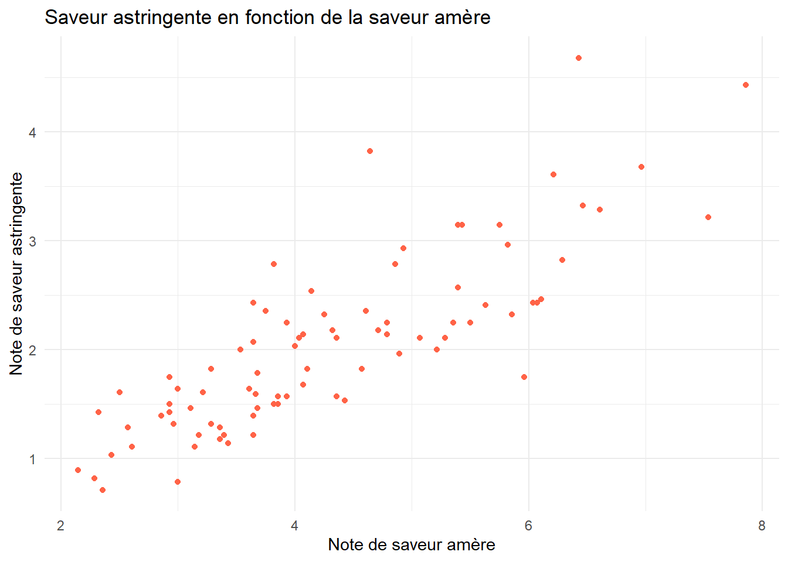
cor.test(x=cidre$S.Amere,y=cidre$S.Astringente)
Pearson's product-moment correlation
data: cidre$S.Amere and cidre$S.Astringente
t = 13.583, df = 84, p-value < 2.2e-16
alternative hypothesis: true correlation is not equal to 0
95 percent confidence interval:
0.7485333 0.8853255
sample estimates:
cor
0.828942
Etant donné la forme du nuage de points et la significativité du coefficient de corrélation (\(p\)-value inférieure à \(2.2\times 10^{-16}\) dans le test de nullité), un modèle linéaire semble parfaiement adapté aux données.
Ajuster un modèle linéaire donnant la saveur astringente en fonction de la saveur amère. Quel est le pourcentage de variance expliquée par ce modèle ?
Call:
lm(formula = S.Astringente ~ S.Amere, data = cidre)
Residuals:
Min 1Q Median 3Q Max
-1.14284 -0.32774 -0.05057 0.27225 1.60204
Coefficients:
Estimate Std. Error t value Pr(>|t|)
(Intercept) -0.14678 0.16938 -0.867 0.389
S.Amere 0.50964 0.03752 13.583 <2e-16 ***
---
Signif. codes: 0 '***' 0.001 '**' 0.01 '*' 0.05 '.' 0.1 ' ' 1
Residual standard error: 0.4532 on 84 degrees of freedom
(4 observations effacées parce que manquantes)
Multiple R-squared: 0.6871, Adjusted R-squared: 0.6834
F-statistic: 184.5 on 1 and 84 DF, p-value: < 2.2e-16
Réponse
Le pourcentage de variance expliquée par ce modèle est de 68,71%.
Sur un graphique, représenter :
le nuage de points donnant la saveur astringente des cidres en fonction de leur saveur amère;
la droite de régression linéaire donnée par le modèle utilisé;
les différents intervalles de confiance au niveau 95% pour les prévisions faites par le modèle.
Voir le code
pred <-predict(lm_cidre,newdata = cidre,interval="prediction")cidre <- cidre %>%mutate(pred_lwr=pred[,2],pred_upr=pred[,3])ggplot(cidre)+aes(x=S.Amere,y=S.Astringente)+geom_point(color="tomato")+geom_smooth(method="lm",color="tomato",lwd=0.5,linetype="dashed",alpha=0.2,aes(fill="Intervalle de confiance pour la valeur moyenne (95%)"))+scale_fill_manual(values="tomato")+geom_line(aes(y=pred_lwr,linetype ="Intervalle de confiance pour les prévisions (95%)"))+geom_line(aes(y=pred_upr,linetype ="Intervalle de confiance pour les prévisions (95%)"))+scale_linetype_manual(values="dotted")+theme_minimal()+labs(title ="Saveur astringente en fonction de la saveur amère",x="Note de aveur amère",y="Note de saveur astringente")+theme(legend.position ="bottom",legend.title =element_blank())
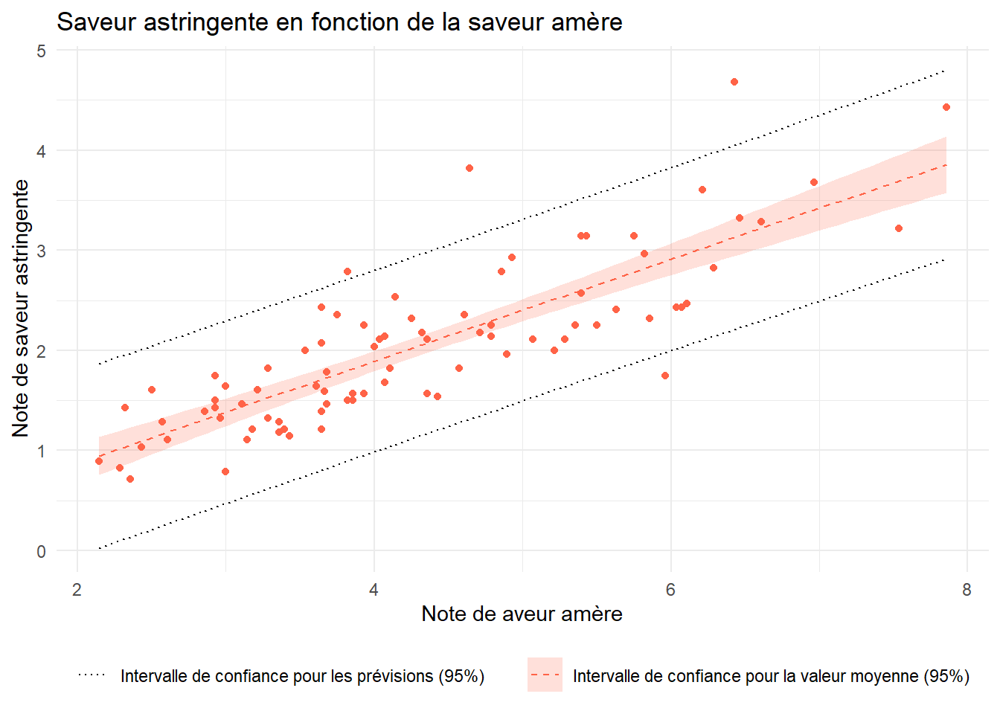
Imputer enfin les valeurs manquantes, et donner leur intervalle de confiance au niveau 95%.